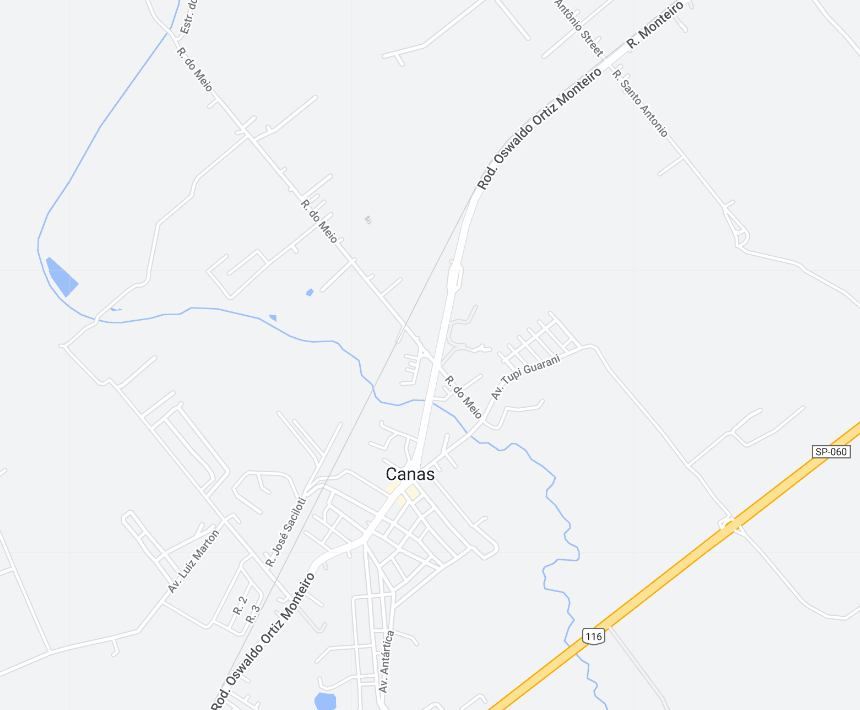
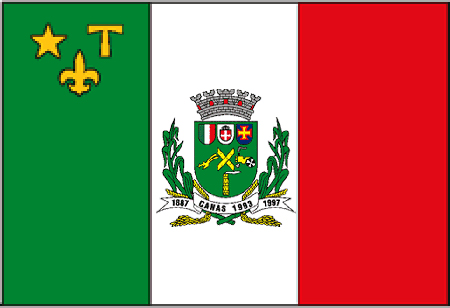

Canas - Geodex


Município de Canas
-
Populacão: 5.268 pessoas
-
Área: 53,261km²
-
Fundação: 10 de Março de 1891
-
Distância da Capital: 195km
Canas é uma cidade localizada no interior de São Paulo, fundada em 1891. Sua história está ligada à ocupação do Vale do Paraíba e à atividade cafeeira. Durante o ciclo do café, a região prosperou e se desenvolveu com a construção de fazendas e a chegada de imigrantes europeus. Com o declínio da produção cafeeira, Canas se transformou em um município voltado para a agropecuária, destacando-se na produção de leite e na criação de gado. Atualmente, a cidade preserva seu patrimônio histórico e se destaca pela tranquilidade e belezas naturais, atraindo visitantes em busca de sossego e contato com a natureza.